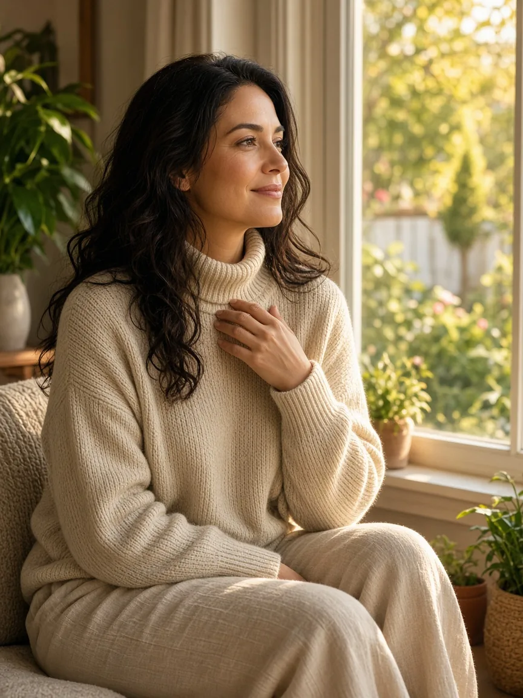

Я из очень хорошей и честной семьи — у неё есть репутация. А у меня есть проект, которым очень хочется заняться. Но подступиться страшно: а вдруг не получится справиться? Ошибиться нельзя. Этот страх высасывает из меня энергию 💔09:14
Узнавание
Ты можешь многое успевать — и при этом не чувствовать, что живёшь своей жизнью
Внешне может быть всё хорошо. Но внутри остаётся ощущение, что что-то не так.


Возможно, ты узнаешь себя
 НажмиНаведи
НажмиНаведи
01Энергия
01Энергия
Ты многое делаешь, но быстро устаёшь. Даже после отдыха не всегда чувствуешь себя восстановившейся.
НажмиНаведи
02Действия
02Действия
Ты знаешь, чего хочешь, но откладываешь важные задачи. Иногда даже простое действие превращается во внутреннюю борьбу.

НажмиНаведи03Мысли и эмоции
03Мысли и эмоции
Ты слишком долго обдумываешь решения, переживаешь из-за ошибок или позволяешь отдельным мыслям влиять на весь день.
НажмиНаведи
04Отношение к себе
04Отношение к себе
Ты можешь быть требовательной к себе, замечать недостатки сильнее достижений и оценивать себя через чужое мнение.
НажмиНаведи
05Удовольствие от жизни
05Удовольствие от жизни
Ты постоянно куда-то спешишь. Иногда замечаешь, что почти не успеваешь почувствовать удовольствие от того, что уже есть.
Тебе нужно лучше понять, как ты устроена — и что действительно поможет именно тебе.